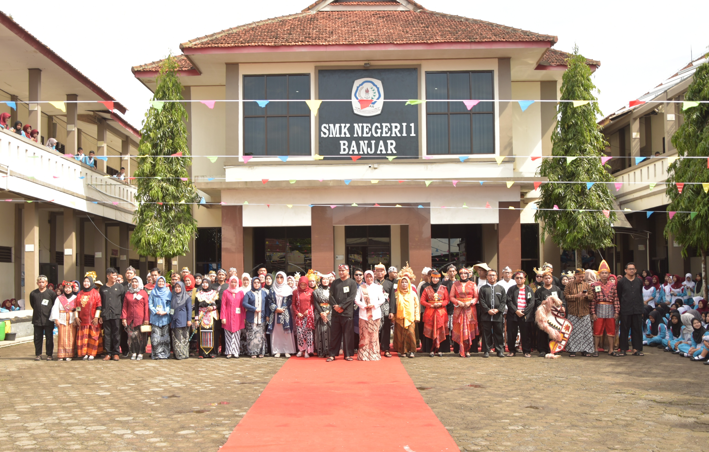

Profil SMKN 1 Banjar
Sekolah Menengah Kejuruan Negeri yang berdedikasi untuk mencetak tenaga kerja profesional, berkarakter, dan siap bersaing di era digital sejak tahun 1969. Kami mengedepankan inovasi, kejujuran, dan kreativitas.
SELENGKAPNYAIdentitas
NPSN: 20225282. Berdiri 2 Januari 1969, sekolah negeri unggulan.
Kepala Sekolah
Dipimpin oleh Ibu Ani Lukmayani, S.Pd., M.Pd.
Lokasi
Jl. KH Mustofa Lingk. Parung Lesang, Kota Banjar, Jawa Barat.
Akreditasi
Akreditasi A (Unggul) dengan standar mutu nasional.
Kontak
0265-744860 | smkn1banjar@sch.id
Komunitas
Jejaring alumni & industri yang luas dan solid.
Kompetensi Keahlian Unggulan
RPL/PPLG
Rekayasa Perangkat Lunak/Pengembangan Perangkat Lunak & GIM
AKL
Akuntansi & Keuangan Lembaga
MPLB
Manajemen Perkantoran & Layanan Bisnis
DKV
Desain Komunikasi Visual
TBS
Tata Busana
BDP
Bisnis Digital & Pemasaran
BCF
Broadcasting & Perfilman
Hubungi Kami
Alamat
Jl. KH Mustofa Lingk. Parung Lesang RT 05 RW 10, Kec. Banjar, Kota Banjar, Prov. Jawa Barat
Telepon
(0265) 741722
smkn1banjar@sch.id
Jam Operasional
Senin - Jumat: 07.00 - 16.00